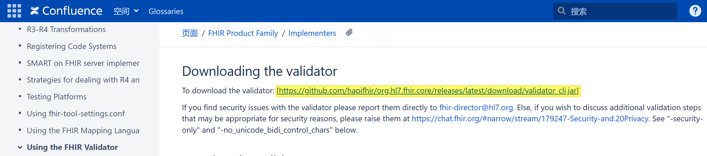
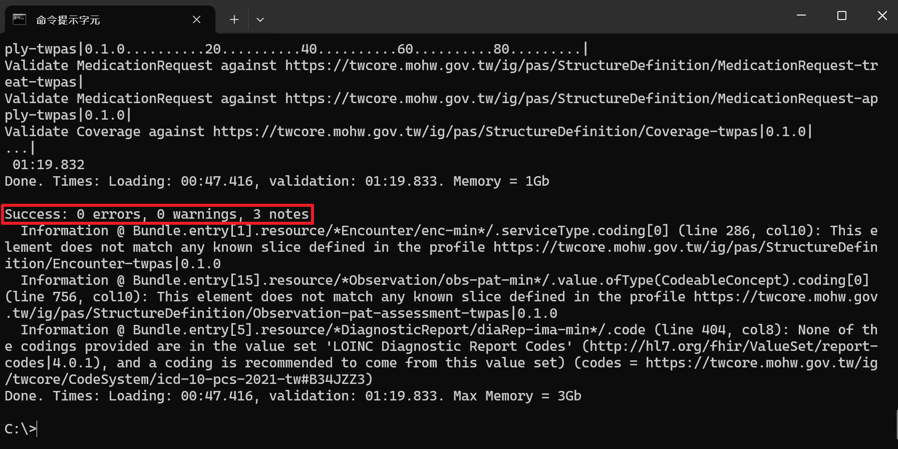
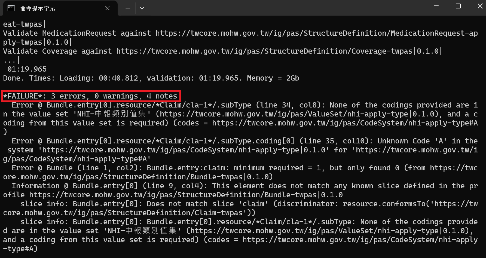

臺灣健保癌症用藥事前審查實作指引
1.0.6 - STU1.0.6
臺灣健保癌症用藥事前審查實作指引
1.0.6 - STU1.0.6
臺灣健保癌症用藥事前審查實作指引 - Downloaded Version 1.0.6 See the Directory of published versions
本頁將說明如何驗證實作檔是否符合TWPAS IG規範。
若IG已註冊可直接跳至Step 3，但目前因尚未註冊，須從Step 1開始。
於「結構定義與範例檔案下載」頁下載整個 TWPAS IG 的 Package。
下載下來的package.tgz檔案，請先解壓縮成package資料夾檔案！
解壓縮第一次還是package.tar壓縮檔案，解壓縮第二次才是package資料夾。

Package Cache檔案路徑如下：
在packages路徑下創建一個資料夾並命名為「tw.gov.mohw.nhi.pas#1.0.6」，將package.tgz解壓縮後的package資料夾放置於「tw.gov.mohw.nhi.pas#1.0.6」中。
若是第一次執行，須自行新增「.fhir」資料夾及其項下的「packages」資料夾。
進入HL7驗證說明官網(Confluence Pages of Health Level 7 (HL7) International)後尋找「Downloading the validator」項目，下載「validator_cli.jar」檔。
如果您手邊已經有一個依據TWPAS IG實作的JSON檔，您可以使用您的實例檔案，如果您尚未有這樣的檔案，可以下載如下圖所示的TWPAS IG的「Bundle 事前審查-送核」範例。如下圖所示，請於TWPAS IG網站上，找到範例頁面中「Bundle」的「事前審查-送核」，點選「JSON」頁籤中的「Download」，若沒有自動下載，請按右鍵，選擇「另存新檔...」。
最終完整檔為Bundle，但實作中通常會先驗證Bundle.entry的各Resource，例如：Patient、Practitioner及Organization等，各Profile的範例亦可於範例頁面中下載。
請將Step 4下載之範例JSON檔(或您自己的實例JSON檔)及Step 3 validator_cli.jar檔，放置於「C:\」目錄中。
這邊只是為了方便驗證時簡化語法及避免太複雜的說明，而將上述兩個檔案放在相同目錄，使用者/實作者可視情況放在不同的目錄，但後續驗證語法也要自行做相對應的調整。
請開啟「命令提示字元」，將檔案路徑指向至「C:\」目錄。
若執行失敗，請以系統管理員身分執行命令提示字元。
請於「命令提示字元」依序輸入以下語法：
1. FHIR提供的驗證程式－紅色①『java -jar validator_cli.jar』
2. 要驗證的Profile實例(即JSON檔)－藍色②『Bundle-bun-1.json』(即為您於Step5所放置於C:\的JSON檔案名稱)
3. 驗證的IG及其版本號－橘色③『-ig tw.gov.mohw.nhi.pas#1.0.6』，鍵入Enter，即可查看驗證結果
①、②、③之間需有空格，完整語法即：java -jar validator_cli.jar Bundle-bun-1.json -ig tw.gov.mohw.nhi.pas#1.0.6
若驗證「通過」，可看到「Success: 0 errors, 0 warnings, 3 notes」，原則上看到0 errors即代表通過驗證，warning及note可參考就好，不影響實作。後續的更版可能會解決其中幾個notes (即Information)。
若驗證「不通過」，可看到「*FAILURE*: ...」，可看出第35行的代碼為錯誤代碼。再依據錯誤訊息修改實例後重新驗證，直到驗證成功為止，即表示實例符合Profile定義。
